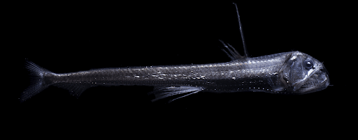

Epipelagic Zone (the sunlight zone)
-2-3% of the entire ocean
-there is insufficient light for photosynthesis in deeper parts of the ocean
-there is insufficient light for photosynthesis in deeper parts of the ocean
0-200m
 Coral
Coral
-in ocean and freshwater ecosystems
-obtains energy through photosynthesis
-account for at least half the world oxygen production
-only about 1% plant biomass
 Phytoplankton
Phytoplankton
-0-60m
-a 'group' is a colony of geneticaly-identical, millmeter-sized polyps
-obtains most their energy from photosynthesis that live in their tissues
Mesopelagic Zone (The Twilight Zone)
-home to more fish than the rest of the ocean combined
-temperatures remain near freezing w/ pressure to 1,500 pounds per square inch
-lots of migration to surface to feed during the night and returning to depth before daybreak
-temperatures remain near freezing w/ pressure to 1,500 pounds per square inch
-lots of migration to surface to feed during the night and returning to depth before daybreak
200-1,000m
Giant Siphonophore
-700-1,000m long
-up to 40m long
-is actually a colony of biological components called zooids
-700-1,000m long
-up to 40m long
-is actually a colony of biological components called zooids
 Swordfish
Swordfish
-0-550m long
-up to 3m long & 650kg
-ectothermic & have special organs that keep the eyes and brain warm
Bathypelagic Zone (The Midnight Zone)
-oxygen minimum zone
-steady temperature of 4
-pressures ranging from 100-400 atmospheres
-receives no light
-steady temperature of 4
-pressures ranging from 100-400 atmospheres
-receives no light
1,000-4,000m

Viperfish
-max depth 2,800 meters
-up to 30cm long
-has a bioluminescent sphere on its dorsal spine to attract prey
-max depth 2,800 meters
-up to 30cm long
-has a bioluminescent sphere on its dorsal spine to attract prey
Vampire Squid
- 600-1,200 meters
-up to 30cm long
-proportional to bodysize, has the largest eyes of any living animal
- 600-1,200 meters
-up to 30cm long
-proportional to bodysize, has the largest eyes of any living animal
Abyssopelagic Zone (The Abyss)
-ocean floor bottoms out at around 4,000m
-reaches up to 600 atmospheres of pressure
-reaches up to 600 atmospheres of pressure
4,000-6,000m
 Humpback Anglerfish
Humpback Anglerfish
-lives at depths of at least 2,000m
-medium sized fish (18cm)
-can live extended times in anaerobic conditions
Basket Star
-lives in deep sea but can also be found in shallow waters
-can weigh up to 5kg
-lives in deep sea but can also be found in shallow waters
-can weigh up to 5kg
Tripodfish
- 900-4,700m
-30cm to 43cm
-relies on large fin rays to detect food
- 900-4,700m
-30cm to 43cm
-relies on large fin rays to detect food
Hadal Zone
-mostly ocean trenches that extend from 6,000m to 11,000m
-walls of trenches are steep and going through levels of pressure creating varieties of habitats
-walls of trenches are steep and going through levels of pressure creating varieties of habitats
6,000-11,000m